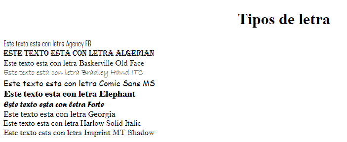
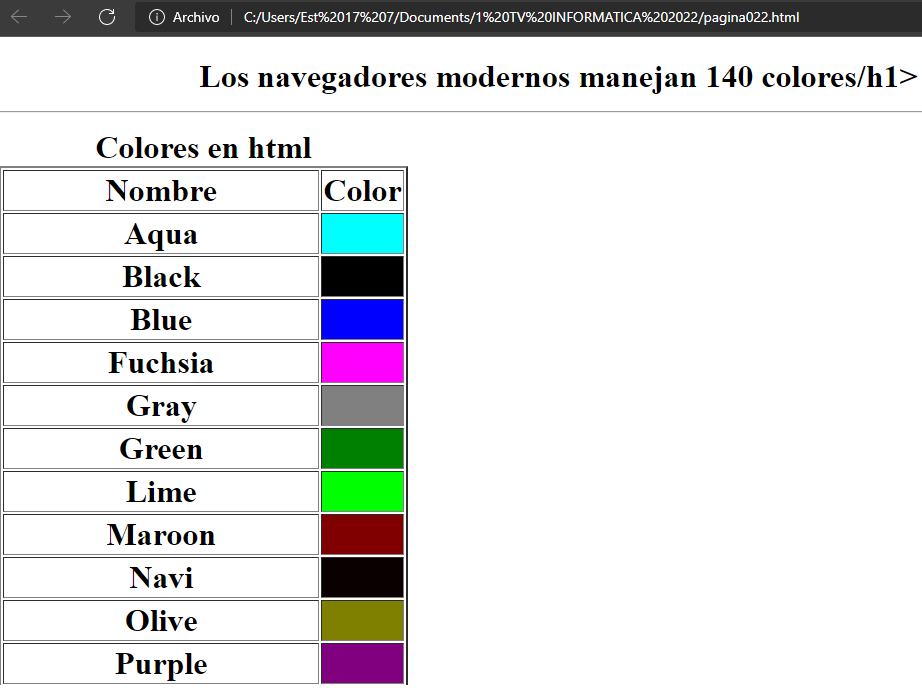
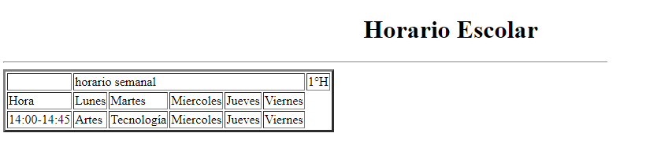
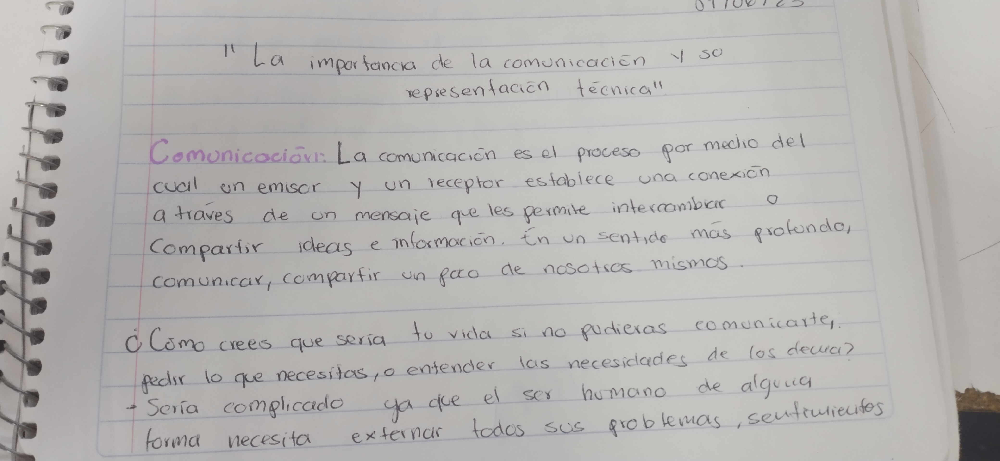
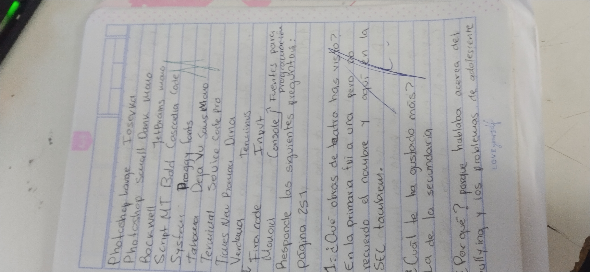
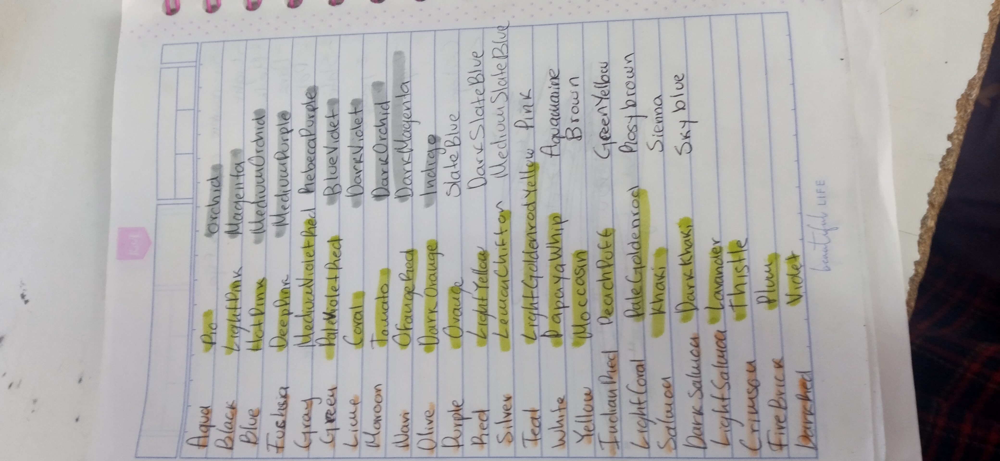
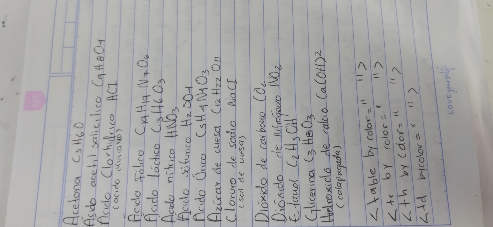
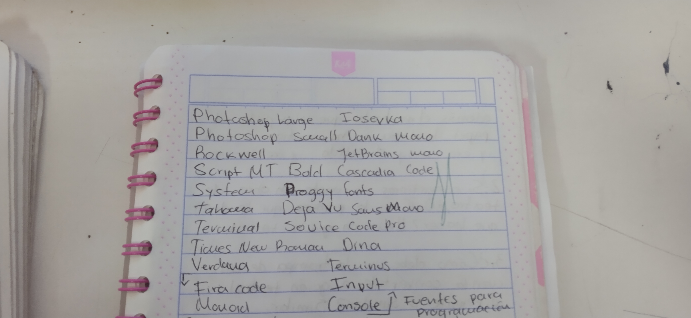
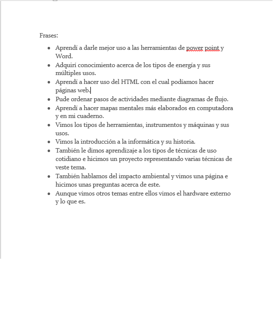

Inicio
Inicio
Anterior Alumno
Sguiente Alumna
1 TV pagina 001 y 1 pagina003


Pagina006 y Pagina web ejemplos


Pagina 016 y Pagina 017


Pagina 21 y pagina 022


Horario escolar

Carta para el dia de la madre


Trabajos de clase


Trabajos de clase



Hoja de aprendizajes de todo el año

Haga click para descargar